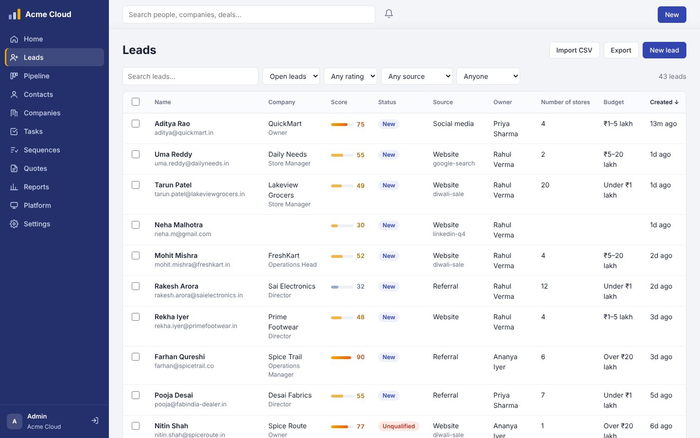
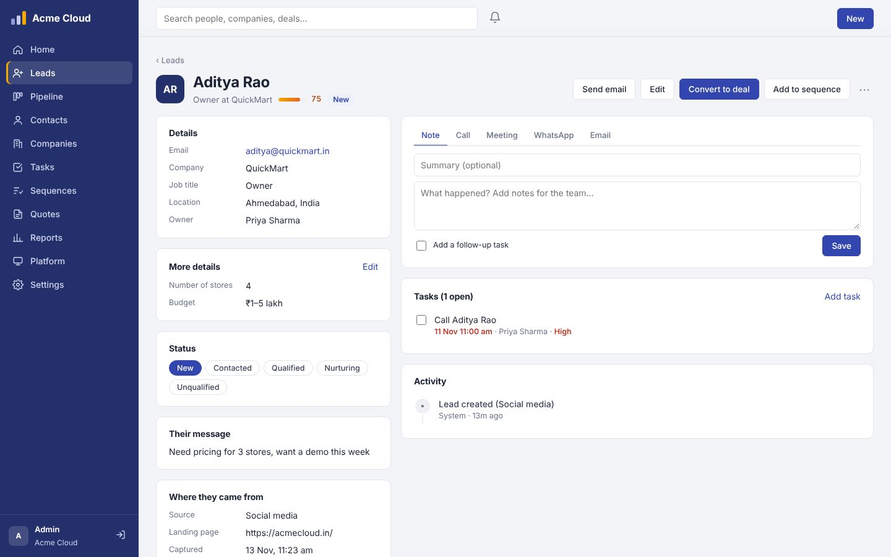
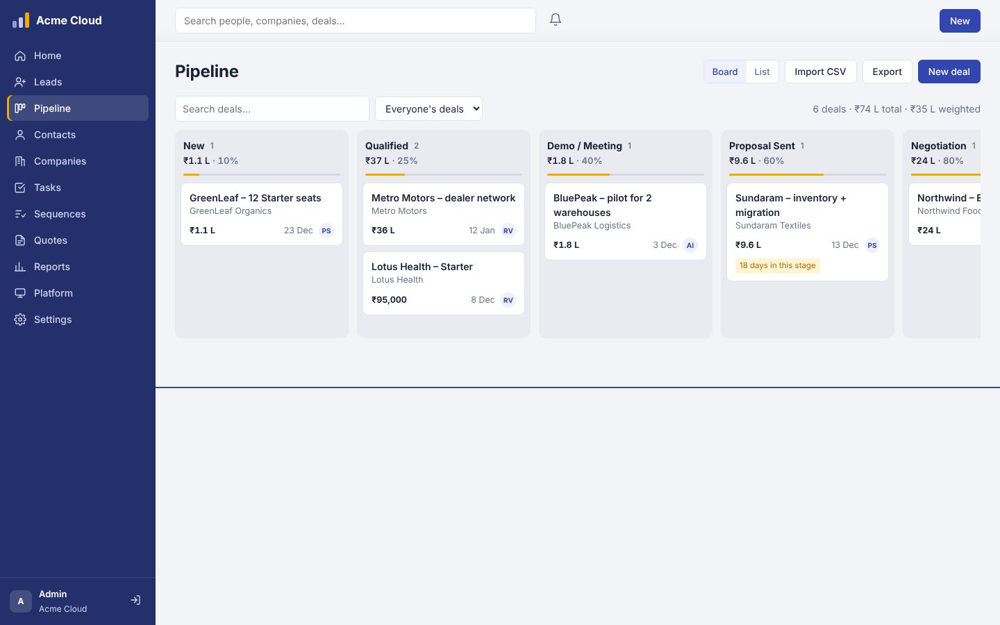
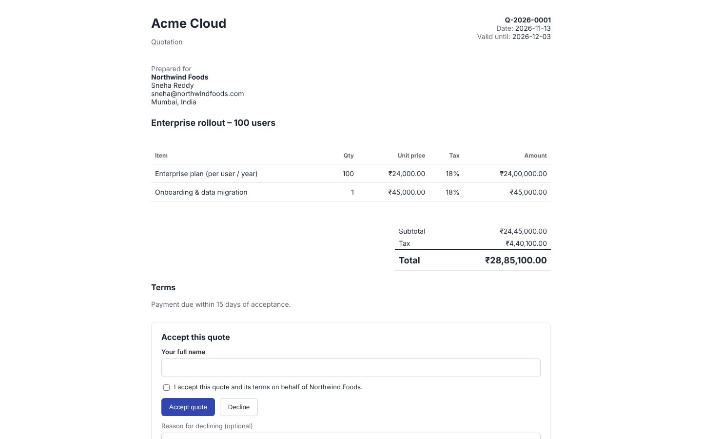

Small businesses collect signups on their websites, then lose them in an inbox or a spreadsheet before anyone calls back. I designed and built a complete sales CRM that captures every signup as a lead, follows up automatically and tracks the deal to the end. It's open source and free for any number of users.
The full walkthrough, from a website signup to a won deal, about six minutes.
One script tag copies every form on a website into the CRM, including WordPress, Webflow and Wix forms, with campaign tracking, duplicate merging and lead scoring.
Sequences send a welcome email, a reminder and a call task, and stop on their own when the person replies, unsubscribes or becomes a customer.
Drag-and-drop pipeline, quotes customers accept online with their name, and booking pages that turn a meeting request into a lead and a task.
Dashboard, forecast, funnel and leaderboard, automations, custom fields, roles, and alerts on Telegram, Slack or email.
Two-step sign-in, encrypted credentials, an audit log, and India DPDP Act tools: consent records, unsubscribe links, and export or erase a person's data.
One company per server, or many companies on one server, each fully isolated. Works on phones and can be installed like an app.




Businesses won't risk breaking their signup flow for a CRM. The capture script only reads a copy of the form when it's submitted, skips login and payment fields, and fails silently, so the website behaves exactly as before.
Automatic emails that keep going after someone has replied damage trust. Sequences stop by themselves on a logged call, an unsubscribe or a conversion, and the team can switch that off per sequence.
Instead of a PDF that disappears into an inbox, quotes are a link. The salesperson is notified when it's opened and accepted, and the deal is marked won without anyone updating it.
I first designed licence keys and paid plans, then removed them. The people who need this most are the smallest teams, and a free tool with no user cap removes the reason not to try it.
You need Node.js 22.5 or newer, nothing else.
git clone https://github.com/abhinavspambox/munshi-crm.git cd munshi-crm npm start # then open http://localhost:3000